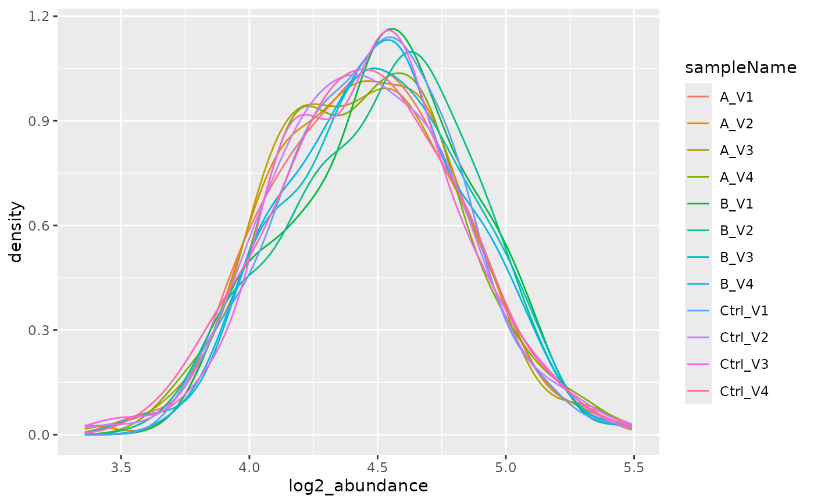
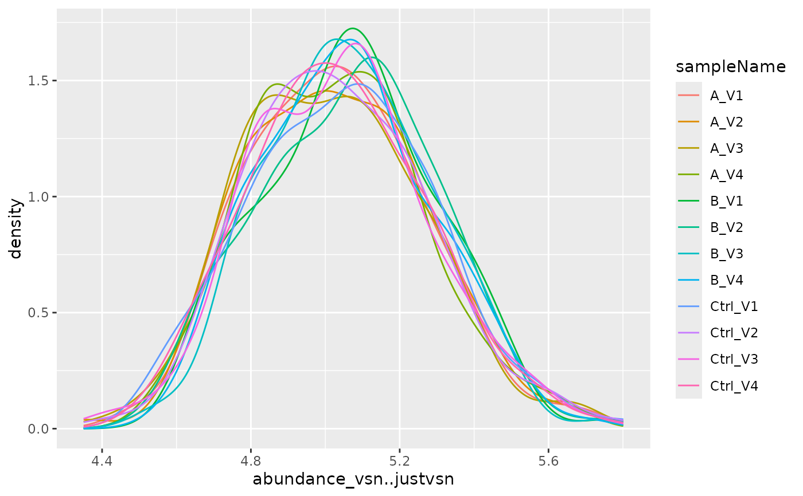
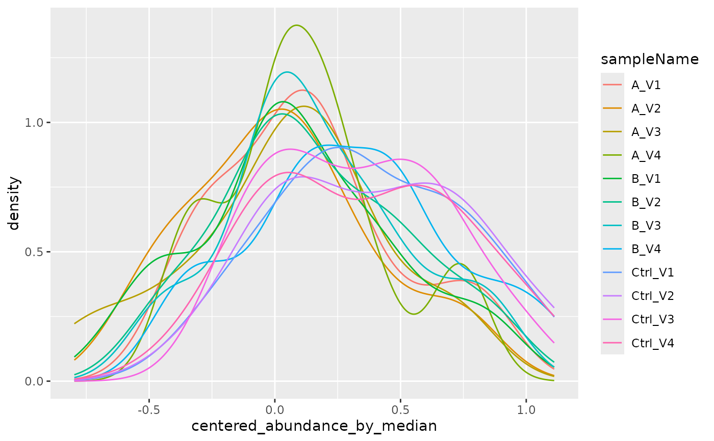
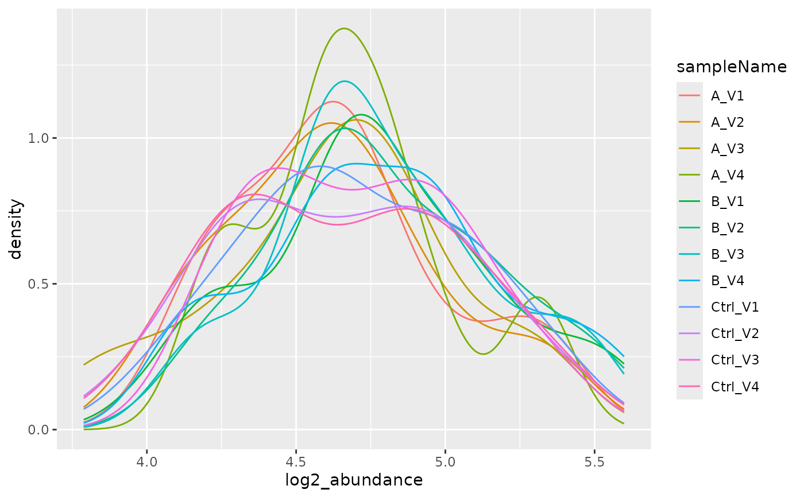
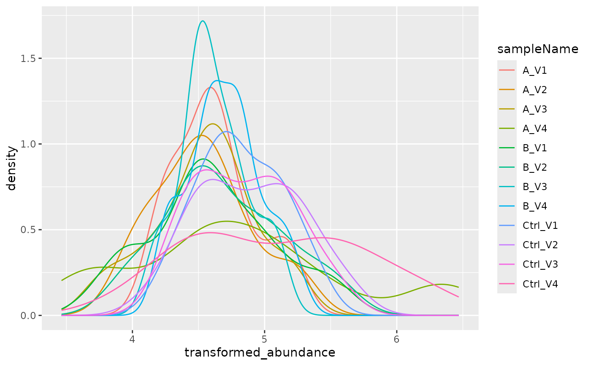

Decorate LFQData with Methods for transforming Intensities
Source:R/LFQDataTransformer.R
LFQDataTransformer.RdDecorate LFQData with Methods for transforming Intensities
Decorate LFQData with Methods for transforming Intensities
Methods
Method log2()
log2 transform data
Method robscale()
robust scale data
Method robscale_subset()
log2 transform and robust scale data based on subset
Usage
LFQDataTransformer$robscale_subset(
lfqsubset,
preserveMean = TRUE,
colname = "transformed_abundance"
)Method center_to_reference()
log2 transform and robust scale data based on subset
Method intensity_array()
Transforms intensities
Method intensity_matrix()
pass a function which works with matrices, e.g., vsn::justvsn
Examples
istar <- prolfqua_data('data_ionstar')$filtered()
#> Column added : nr_peptide_Id_IN_protein_Id
data <- istar$data |> dplyr::filter(protein_Id %in% sample(protein_Id, 100))
lfqdata <- LFQData$new(data, istar$config)
lfqcopy <- lfqdata$get_copy()
lfqTrans <- lfqcopy$get_Transformer()
x <- lfqTrans$intensity_array(log2)
#> Column added : log2_peptide.intensity
x$lfq$config$is_response_transformed
#> [1] TRUE
x <- x$intensity_matrix(robust_scale)
#> Warning: data already transformed. If you still want to log2 tranform, set force = TRUE
plotter <- x$lfq$get_Plotter()
plotter$intensity_distribution_density()
 # transform by asinh root and scale
lfqcopy <- lfqdata$get_copy()
lfqTrans <- lfqcopy$get_Transformer()
x <- lfqTrans$intensity_array(asinh)
#> Column added : asinh_peptide.intensity
mads1 <- mean(x$get_scales()$mads)
x <- lfqTrans$intensity_matrix(robust_scale, force = TRUE)
#> Joining with `by = join_by(protein_Id, sampleName, isotope, peptide_Id)`
mads2 <- mean(x$get_scales()$mads)
stopifnot(abs(mads1 - mads2) < 1e-8)
stopifnot(abs(mean(x$get_scales()$medians)) < 1e-8)
lfqcopy <- lfqdata$get_copy()
lfqTrans <- lfqcopy$get_Transformer()
lfqTrans$log2()
#> Column added : log2_peptide.intensity
before <- lfqTrans$get_scales()
lfqTrans$robscale()
#> data is : TRUE
#> Joining with `by = join_by(protein_Id, sampleName, isotope, peptide_Id)`
after <- lfqTrans$get_scales()
stopifnot(abs(mean(before$medians) - mean(after$medians)) < 1e-8)
stopifnot(abs(mean(before$mads) - mean(after$mads)) < 1e-8)
# normalize data using vsn
lfqcopy <- lfqdata$get_copy()
lfqTrans <- lfqcopy$get_Transformer()
lfqTransCheck <- lfqcopy$get_Transformer()
lfqTransCheck$log2()
#> Column added : log2_peptide.intensity
lfqTransCheck$get_scales()
#> $medians
#> b~02 c~03 d~04 e~05 e~06 d~07 c~08 b~09
#> 24.83373 24.90253 24.82138 24.72917 24.72036 24.70535 24.72028 24.76536
#> a~10 a~11 b~12 c~13 d~14 e~15 e~16 d~17
#> 24.72115 25.15540 25.13049 24.84177 25.06052 25.11136 25.13985 25.17819
#> c~18 b~19 a~20 a~21
#> 25.19270 25.13891 25.16233 25.17072
#>
#> $mads
#> b~02 c~03 d~04 e~05 e~06 d~07 c~08 b~09
#> 2.212583 2.275791 2.171028 2.142237 2.196353 2.127855 2.302519 2.312846
#> a~10 a~11 b~12 c~13 d~14 e~15 e~16 d~17
#> 2.238950 2.243746 2.220689 2.222436 2.126487 2.162166 2.148171 2.265475
#> c~18 b~19 a~20 a~21
#> 2.234537 2.214160 2.196464 2.227671
#>
lfqTransCheck$lfq$get_Plotter()$intensity_distribution_density()
# transform by asinh root and scale
lfqcopy <- lfqdata$get_copy()
lfqTrans <- lfqcopy$get_Transformer()
x <- lfqTrans$intensity_array(asinh)
#> Column added : asinh_peptide.intensity
mads1 <- mean(x$get_scales()$mads)
x <- lfqTrans$intensity_matrix(robust_scale, force = TRUE)
#> Joining with `by = join_by(protein_Id, sampleName, isotope, peptide_Id)`
mads2 <- mean(x$get_scales()$mads)
stopifnot(abs(mads1 - mads2) < 1e-8)
stopifnot(abs(mean(x$get_scales()$medians)) < 1e-8)
lfqcopy <- lfqdata$get_copy()
lfqTrans <- lfqcopy$get_Transformer()
lfqTrans$log2()
#> Column added : log2_peptide.intensity
before <- lfqTrans$get_scales()
lfqTrans$robscale()
#> data is : TRUE
#> Joining with `by = join_by(protein_Id, sampleName, isotope, peptide_Id)`
after <- lfqTrans$get_scales()
stopifnot(abs(mean(before$medians) - mean(after$medians)) < 1e-8)
stopifnot(abs(mean(before$mads) - mean(after$mads)) < 1e-8)
# normalize data using vsn
lfqcopy <- lfqdata$get_copy()
lfqTrans <- lfqcopy$get_Transformer()
lfqTransCheck <- lfqcopy$get_Transformer()
lfqTransCheck$log2()
#> Column added : log2_peptide.intensity
lfqTransCheck$get_scales()
#> $medians
#> b~02 c~03 d~04 e~05 e~06 d~07 c~08 b~09
#> 24.83373 24.90253 24.82138 24.72917 24.72036 24.70535 24.72028 24.76536
#> a~10 a~11 b~12 c~13 d~14 e~15 e~16 d~17
#> 24.72115 25.15540 25.13049 24.84177 25.06052 25.11136 25.13985 25.17819
#> c~18 b~19 a~20 a~21
#> 25.19270 25.13891 25.16233 25.17072
#>
#> $mads
#> b~02 c~03 d~04 e~05 e~06 d~07 c~08 b~09
#> 2.212583 2.275791 2.171028 2.142237 2.196353 2.127855 2.302519 2.312846
#> a~10 a~11 b~12 c~13 d~14 e~15 e~16 d~17
#> 2.238950 2.243746 2.220689 2.222436 2.126487 2.162166 2.148171 2.265475
#> c~18 b~19 a~20 a~21
#> 2.234537 2.214160 2.196464 2.227671
#>
lfqTransCheck$lfq$get_Plotter()$intensity_distribution_density()

if(require("vsn")){
res <- lfqTrans$intensity_matrix( .func = vsn::justvsn)
res$lfq$get_Plotter()$intensity_distribution_density()
res$get_scales()
}
#> Loading required package: vsn
#> Joining with `by = join_by(protein_Id, sampleName, isotope, peptide_Id)`
#> $medians
#> b~02 c~03 d~04 e~05 e~06 d~07 c~08 b~09
#> 24.85800 24.97357 24.94905 24.94858 24.95029 24.94866 24.98283 24.95805
#> a~10 a~11 b~12 c~13 d~14 e~15 e~16 d~17
#> 24.89048 24.92424 24.91216 25.01958 24.90674 24.99417 25.00696 25.02897
#> c~18 b~19 a~20 a~21
#> 25.00426 24.97514 24.96236 25.00745
#>
#> $mads
#> b~02 c~03 d~04 e~05 e~06 d~07 c~08 b~09
#> 2.212583 2.275791 2.171028 2.142237 2.196353 2.127855 2.302519 2.312846
#> a~10 a~11 b~12 c~13 d~14 e~15 e~16 d~17
#> 2.238950 2.243746 2.220689 2.222436 2.126487 2.162166 2.148171 2.265475
#> c~18 b~19 a~20 a~21
#> 2.234537 2.214160 2.196464 2.227671
#>
if(require("preprocessCore")){
quant <- function(y){
ynorm <- preprocessCore::normalize.quantiles(y)
rownames(ynorm) <- rownames(y)
colnames(ynorm) <- colnames(y)
return(ynorm)
}
res <- lfqTrans$intensity_matrix( .func = quant)
res$lfq$get_Plotter()$intensity_distribution_density()
}
#> Loading required package: preprocessCore
#> Warning: data already transformed. If you still want to log2 tranform, set force = TRUE

#subset scaling
istar2 <- sim_lfq_data_peptide_config()
#> creating sampleName from file_name column
#> completing cases
#> completing cases done
#> setup done
lfqdata2 <- LFQData$new(istar2$data, istar2$config)
lfqdata2 <- lfqdata2$get_Transformer()$intensity_array(log2)$lfq
#> Column added : log2_abundance
head(lfqdata2$hierarchy())
#> # A tibble: 6 × 1
#> protein_Id
#> <chr>
#> 1 0EfVhX~0087
#> 2 7cbcrd~5725
#> 3 9VUkAq~4703
#> 4 BEJI92~5282
#> 5 CGzoYe~2147
#> 6 DoWup2~5896
internal <- lfqdata2$get_subset(head(lfqdata2$hierarchy()))
#> Joining with `by = join_by(protein_Id)`
internal$hierarchy()
#> # A tibble: 6 × 1
#> protein_Id
#> <chr>
#> 1 0EfVhX~0087
#> 2 7cbcrd~5725
#> 3 9VUkAq~4703
#> 4 BEJI92~5282
#> 5 CGzoYe~2147
#> 6 DoWup2~5896
tr <- lfqdata2$get_Transformer()
tr$center_to_reference(internal)
#> data is transoformed: TRUE
pl <- tr$lfq$get_Plotter()
pl$intensity_distribution_density()

lfqdata2$get_Plotter()$intensity_distribution_density()

robscale <- lfqdata2$get_Transformer()$robscale_subset(internal)$lfq
#> data is : TRUE
#> Joining with `by = join_by(sampleName, isotopeLabel, protein_Id, peptide_Id)`
robscale$get_Plotter()$intensity_distribution_density()
